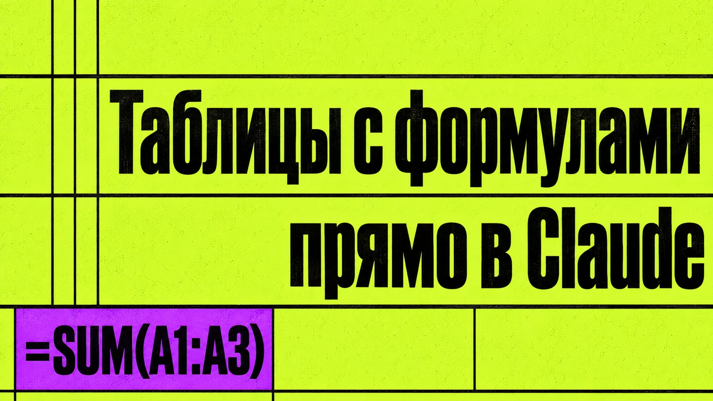

Новости ИИ
Новые модели, исследования, продукты и события индустрии искусственного интеллекта.
14 ноября 2026

Трампа заподозрили в скрытом налоге на экспорт чипов NVIDIA в Китай
Рон Уайден и Ричард Нил начали расследование схемы американских пошлин и лицензирования поставок NVIDIA H200 в Китай. Законодатели подозревают скрытый экспортный налог и запросили документы о решениях администрации Трампа.

ChatGPT дали кошелёк — теперь он может ходить по магазинам вместо вас
OpenAI запустила ChatGPT Wallet для ИИ-агентов dots: они могут оформлять покупки с помощью виртуальных платёжных реквизитов после биометрического подтверждения владельца. Постепенный запуск для подходящих пользователей ChatGPT Pro в США.

Google дала Gemini глаза — теперь он видит то же, что и вы
Google открыла предзаказы на умные очки Intelligent Eyewear с Gemini, камерой 12 Мп и голосовыми ответами. Samsung разработала электронику, Warby Parker и Gentle Monster — оправы; старт продаж 10 декабря, цена от $395.

ChatGPT, Gemini и Perplexity отправляли покупателей в фальшивые магазины
В исследовании Podqi из 6795 ответов ChatGPT, Gemini и Perplexity на вопросы о покупках в 9% встретились рискованные сайты; среди 4437 обнаруженных доменов — 351 поддельный и 367 неработающих. В части ответов ИИ рекомендовал такие адреса.

WHOOP запустила соцсеть против ИИ-ботов — с проверкой живого пульса
WHOOP запустила в своём приложении соцсеть Humans для владельцев фитнес-браслетов, где можно общаться, публиковать Moments и делиться показателями сна и нагрузок. Компания делает ставку на подтверждённый пульс владельцев устройств.

ИИ ускорил расчёты промышленных биореакторов в 10 тысяч раз
Исследователи Технического университета Граца разработали CLARA — открытую систему, которая упрощает вычислительные модели биореакторов до 5–50 зон и ускоряет моделирование до 10 тысяч раз.

Google научила ИИ заглядывать в будущее вашего здоровья на три месяца вперёд
Экспериментальная система Google SensorWM моделирует, как изменения сна, ходьбы и активности могут повлиять на показатели здоровья за 12 недель. В основе — данные носимых устройств и 125 сценариев распорядка.
Google научила ИИ искать причины болезней в отдельных клетках
Google DeepMind представила AlphaGenome 2: модель исследует влияние вариантов ДНК на активность генов в отдельных типах и состояниях клеток. Доступна учёным через API.

Cisco поручит Claude искать способы взлома корпоративных ИИ-агентов
Cisco планирует добавить Claude Mythos в AI Defense, чтобы проводить санкционированные проверки безопасности корпоративных ИИ-агентов. Вначале новая функция предназначена для отдельных корпоративных клиентов.

Новые модели OpenAI, Google и Anthropic хотят запретить через суд
Четыре американские некоммерческие организации подали в суд иск против OpenAI, Google, Anthropic, Meta и ИИ-подразделения SpaceX. Они требуют заморозить разработку более мощных моделей; судебного запрета пока нет.

Китайские ИИ-компании спешат занять зарубежные серверы NVIDIA из-за угрозы нового запрета США
Китайские ИИ-компании пытаются заранее зарезервировать зарубежные серверы с процессорами NVIDIA на фоне обсуждения в США ограничений удалённого доступа к передовым чипам.
13 ноября 2026

Google выпустила Gemini 4 Hydrogen даже для бесплатных пользователей
Google выпустила Gemini 4 Hydrogen для программирования и ИИ-агентов. В бесплатном Gemini модель подключается автоматически; разработчикам доступны API и работа с Orchestrator.

Дженсен Хуанг ушёл с поста главы NVIDIA на фоне шпионского скандала
NVIDIA объявила об отставке основателя Дженсена Хуанга с постов генерального директора, президента и члена совета директоров. Совет принял её 11 ноября на фоне расследования возможной попытки иностранного разведывательного влияния; временным CEO стала финансовый директор Колетт Кресс. Официальная причина ухода не названа.
United Airlines запретила ИИ-агентам покупать билеты за пассажиров
United Airlines запретила неразрешённым сторонним ИИ-агентам оформлять и менять билеты за пассажиров, в том числе через посредников. Авиакомпания опасается нежелательных покупок, раскрытия персональных данных и нарушений требований безопасности.

Google запустила Gemini в Apple CarPlay — теперь почту можно разбирать за рулём
Google начала мировой поэтапный запуск Gemini Live для Apple CarPlay: голосовые беседы, чтение и пересказ писем Gmail, доступ к календарю и продолжение разговора между iPhone и автомобилем. Для начала нужна актуальная версия Gemini на iPhone.

Claude теперь сам собирает таблицы с формулами прямо в чате
Anthropic представила Claude Sheets и Whiteboards для таблиц и командной работы, а Claude Data вывела из бета-тестирования. Новые инструменты доступны на платных тарифах с разными условиями.
Claude выполняет поручения, пока коллеги совещаются
Anthropic представила Claude Meetings: ИИ-помощник сможет участвовать в совещаниях Google Meet и выполнять поручения во время разговора. Официально выпуск пока анонсирован как скорый.
Минсельхоз США ошибся с прогнозом кукурузы и посадил ИИ перепроверять свои расчёты
Минсельхоз США подключил ИИ к проверке ноябрьского отчёта об урожае после ошибок в сентябрьских прогнозах кукурузы для Канзаса и Небраски. Ранее эксперимент с ИИ помог обнаружить сбой в старых данных.

Стартап получил $35 млн, чтобы ИИ научился помнить вчерашние разговоры
Graphon Labs получила $35 млн инвестиций для разработки Persistent Intelligence — долговременной памяти ИИ-агентов, связывающей разговоры, документы, изображения и видео. По заявленным компанией измерениям, на тесте LoCoMo точность составила 93,9%.

Alibaba два месяца держала в секрете планы вывести своего производителя ИИ-чипов на биржу
Alibaba раскрыла планы вывести разработчика ИИ-чипов T-Head на биржу в Гонконге: конфиденциальная заявка подана 11 сентября, а процедура выделения объявлена 10 ноября. Сроки, объём и оценка IPO пока не определены.